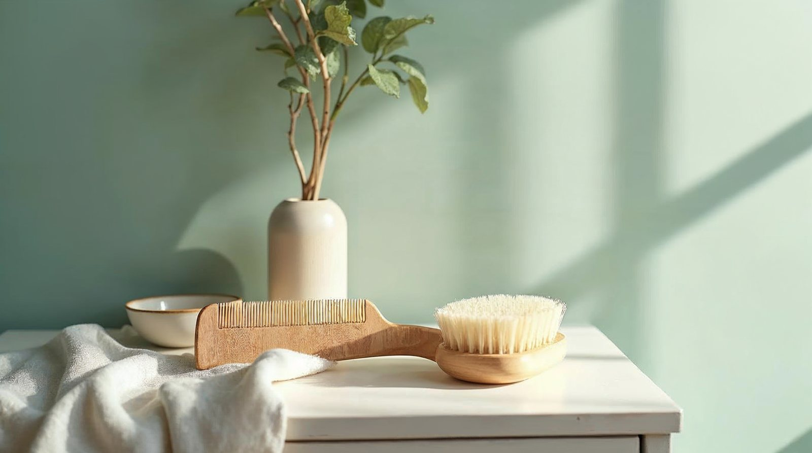
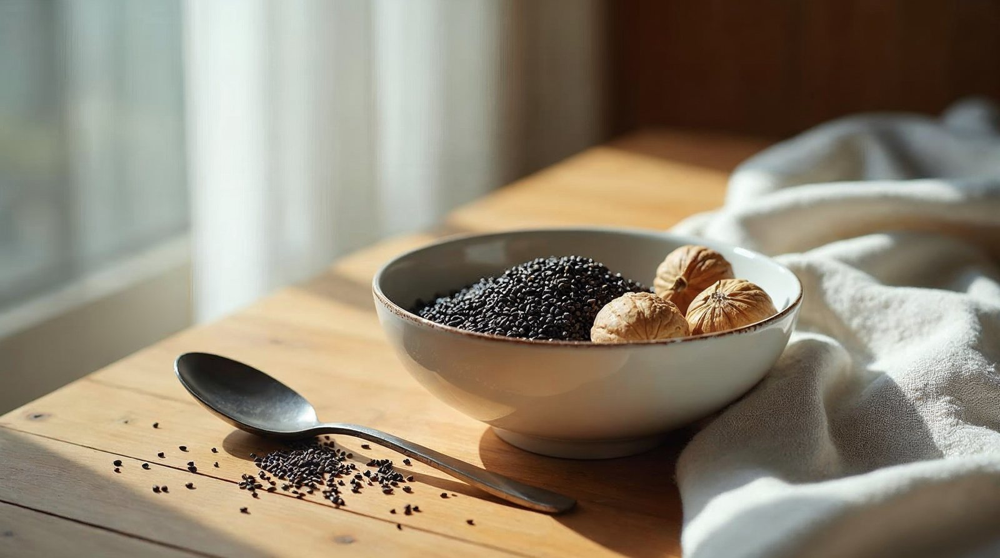

이종호 한의사 감수좋은꿈참사랑한의원 대표원장 (한의사 면허번호 19769)발행 2026-11-23 · 수정 2026-11-26
이 글의 차례
- 왜 이런 불편이 생길 수 있나요
- 다른 탈모와는 어떻게 구분하나요?
- 먼저 이렇게 여쭙니다
- 일상에서 먼저 해 볼 수 있는 것
- 끼니는 어떻게 챙기면 좋을까요?
- 빠지는 양은 어떻게 세어 볼까요?
- 상황별 예시
- 스스로 점검해 보세요
- 한의학에서는 이런 탈모를 어떻게 바라보나요?
- 자주 하는 오해는 무엇인가요?
- 마음이 불안할 때는 어떻게 할까요?
- 머리 손질은 어떻게 하면 좋을까요?
- 언제쯤 다시 자라는지 어떻게 지켜볼까요?
- 한의원에서 함께 살필 수 있는 경우
- 첫 진료는 어떤 순서로 진행되나요?
- 다시 오셨을 때는 무엇을 비교하나요?
- 출산 뒤라면 무엇을 더 살피나요?
- 얼마나 지켜보고 언제 상담할까요
- 이렇게 기록해 오시면 상담이 쉬워집니다
- 이런 증상은 먼저 확인이 필요합니다
- 함께 읽으면 좋은 글
큰 스트레스나 고열, 출산, 급한 다이어트 뒤 2~4개월쯤 지나 머리카락이 한꺼번에 빠지는 경우가 있어, 빠지기 시작한 시기와 그 전 몇 달의 일, 식사와 잠을 먼저 확인합니다.
머리를 감을 때마다 배수구가 막힐 만큼 빠지면 덜컥 겁이 나지만, 돌아보면 몇 달 전 크게 아팠거나 시험, 이사, 출산처럼 큰 일을 겪은 뒤인 경우가 많습니다.
왜 이런 불편이 생길 수 있나요
- 큰 일을 겪으면 자라던 머리카락이 한꺼번에 쉬는 단계로 넘어갔다가 몇 달 뒤 빠지는 경우가 있습니다(휴지기 탈모라고 부르기도 합니다).
- 식사량을 크게 줄이면 머리카락을 만드는 데 필요한 단백질과 철분이 모자랄 수 있습니다.
- 출산 뒤에도 비슷한 시기에 머리카락이 많이 빠지는 분이 있습니다.
- 빈혈이나 갑상선 같은 몸 상태가 함께 영향을 주는 경우도 있어 확인 신호를 함께 봅니다.
- 고열이 나는 몸살이나 수술, 크게 앓은 감기 뒤에도 몇 달 지나 비슷한 일이 생길 수 있습니다.
- 한의학에서는 큰 일을 겪은 뒤 기운이 회복되는 흐름과 잠, 소화, 월경의 리듬도 함께 살핍니다.
머리카락 한 올 한 올은 자라는 시기, 멈추는 시기, 쉬다가 빠지는 시기를 차례로 지납니다. 평소에는 대부분이 자라는 시기에 있어 하루에 빠지는 양이 많지 않습니다.
그런데 몸이 큰 충격을 받으면 자라던 머리카락 가운데 많은 수가 한꺼번에 쉬는 시기로 넘어갑니다. 쉬는 시기가 두세 달 이어진 뒤에야 빠지기 때문에, 정작 힘든 일이 지나가고 한숨 돌릴 무렵 머리카락이 빠지기 시작합니다.
다른 탈모와는 어떻게 구분하나요?
- 머리 전체에서 고르게 빠지고, 정수리나 이마 선이 특별히 비지 않는다면 휴지기 탈모인 경우가 많습니다.
- 정수리나 이마 양쪽이 몇 년에 걸쳐 서서히 비어 간다면 남성형·여성형 탈모 쪽으로 살펴봅니다.
- 동전만 한 자리가 갑자기 동그랗게 비면 원형 탈모일 수 있어 따로 구분이 필요합니다.
- 머리를 늘 세게 묶는 자리, 이마 가장자리만 가늘어진다면 당기는 힘 때문일 수 있습니다.
- 두피가 붉고 각질이나 뾰루지가 함께 있다면 두피 상태부터 살핍니다.
빠진 머리카락 끝을 보면 하얀 작은 뿌리가 동그랗게 붙어 있는 경우가 많은데, 이는 쉬는 시기를 지나 빠진 머리카락에서 흔히 보이는 모습입니다.

먼저 이렇게 여쭙니다
- 머리카락이 많이 빠지기 시작한 것이 언제부터인가요?
- 그 2~4개월 전에 크게 아프거나 힘든 일이 있었나요?
- 최근 식사량을 크게 줄이거나 다이어트를 하셨나요?
- 빠지는 모양이 전체적으로 고른가요, 동그랗게 한 곳인가요?
- 요즘 쉽게 피로하거나 어지럽고, 숨이 차는 느낌이 있나요?
- 월경 양이 많아지거나 주기가 바뀌었나요?
- 출산하셨다면 언제였고, 지금 수유 중이신가요?

일상에서 먼저 해 볼 수 있는 것
- 단백질이 들어간 식사를 끼니마다 챙기기
- 잠드는 시간을 일정하게 하기
- 머리를 세게 묶거나 뜨거운 바람으로 오래 말리지 않기
- 빠진 머리카락 수를 같은 방법으로 며칠 세어 기록해 보기
- 머리카락을 너무 자주 빗거나 세게 당기지 않기
끼니는 어떻게 챙기면 좋을까요?
머리카락은 몸이 쓰고 남는 영양으로 만들어지는 편이라, 식사가 모자라면 가장 먼저 뒤로 밀리기 쉽습니다. 다이어트 중이라면 양을 줄이더라도 끼니마다 단백질 반찬 하나는 남겨 두세요.
달걀, 두부, 생선, 살코기, 콩처럼 손쉽게 구할 수 있는 것으로 충분합니다. 철분이 모자라기 쉬운 분이라면 붉은 살코기와 푸른 잎채소도 함께 드셔 보세요. 영양제를 따로 드시고 있다면 이름을 적어 와 주시면 함께 확인합니다.
빠지는 양은 어떻게 세어 볼까요?
매일 세는 것은 오히려 마음을 무겁게 할 수 있어, 일주일에 두 번 정도 같은 방법으로 세어 보시기를 권합니다.
- 머리를 감은 날 배수구 거름망에 모인 머리카락을 휴지 위에 펼쳐 사진 찍기
- 아침에 일어나 베개에 떨어진 머리카락 수 세어 보기
- 같은 빗으로 같은 횟수만큼 빗은 뒤 빗에 남은 양 보기
방법을 하나 정해 몇 주 이어 가면 늘고 주는 흐름이 보입니다. 숫자보다 흐름이 중요하니, 하루 많았다고 너무 걱정하지 않으셔도 됩니다.
상황별 예시
- 예를 들어 지난 여름 고열을 동반한 몸살을 크게 앓고 가을이 깊어질 무렵 머리카락이 많이 빠지기 시작한 경우라면, 앓았던 날짜와 빠지기 시작한 날짜를 함께 적어 오시면 흐름을 이야기하기 쉽습니다.
- 예를 들어 두세 달 동안 식사를 크게 줄여 체중을 뺀 뒤 머리카락이 빠지는 경우라면, 그동안 하루 식사를 어떻게 하셨는지 적어 보고 단백질과 끼니를 다시 챙기는 것부터 함께 정합니다.
- 예를 들어 큰 시험이나 이사, 이직이 겹친 시기를 지나고 몇 달 뒤 빠지기 시작한 경우라면, 그 시기의 잠과 식사, 지금의 피로를 함께 여쭙니다.
- 예를 들어 출산하고 서너 달 뒤부터 머리를 감을 때마다 한 움큼씩 빠지는 경우라면, 출산한 날과 빠지기 시작한 날의 간격부터 함께 맞춰 봅니다.
- 예를 들어 오래 먹던 약을 바꾼 뒤 몇 달 지나 빠지기 시작했다는 경우라면, 약을 바꾼 날짜와 이름을 적어 오시면 시기를 함께 맞춰 보고, 약 조정은 처방한 의사와 상의하시도록 안내합니다.
스스로 점검해 보세요
- 빠지기 시작하기 2~4개월 전에 크게 아프거나 힘든 일이 있었나요?
- 최근 몇 달 사이 체중이 크게 줄었나요?
- 쉽게 피로하고 계단을 오를 때 숨이 차나요?
- 월경 양이 늘거나 주기가 흔들렸나요?
- 빠지는 모양이 머리 전체에 고른가요?
- 동그랗게 빈 자리나 눈썹이 빠지는 일이 있나요?
표시한 항목은 진료 때 함께 보여 주세요. 식사와 잠, 몸 상태 가운데 어디부터 살필지 정하는 실마리가 됩니다.
한의학에서는 이런 탈모를 어떻게 바라보나요?
한의학에서는 머리카락을 피의 남은 기운으로 보는 표현이 있습니다. 큰 병을 앓거나 출산, 무리한 다이어트처럼 몸이 많은 것을 써 버린 뒤에는 피와 기운이 먼저 꼭 필요한 곳으로 가고, 머리카락은 뒤로 밀리기 쉽다고 봅니다.
그래서 진료실에서는 머리카락만이 아니라 얼굴빛, 어지러움, 손발의 냉기, 월경 양, 잠의 깊이를 함께 여쭙습니다. 이런 회복의 신호를 함께 보면, 머리카락을 따로 돌보기보다 몸 전체가 다시 자리를 잡는 흐름을 함께 살필 수 있습니다.
자주 하는 오해는 무엇인가요?
- 빠지는 양이 많으면 머리가 다 빠질 것이라는 생각: 휴지기 탈모는 머리 전체에서 고르게 빠지고, 원인이 지나가면 다시 자라는 경우가 많습니다.
- 머리를 감을수록 더 빠진다는 생각: 감을 때 빠지는 것은 이미 빠질 차례가 된 머리카락이 함께 떨어지는 것입니다.
- 영양제를 많이 먹으면 빨리 회복된다는 생각: 식사가 먼저이며, 영양제는 종류와 양을 확인한 뒤 드시는 편이 좋습니다.
- 스트레스 때문이니 마음만 편하면 된다는 생각: 마음과 함께 식사, 잠, 빈혈 같은 몸 상태도 함께 살펴야 합니다.
마음이 불안할 때는 어떻게 할까요?
머리카락이 한 움큼씩 빠지면 거울 볼 때마다 마음이 내려앉고, 그 불안이 다시 잠을 얕게 만들기도 합니다.
잠드는 시간을 일정하게 하고, 낮에 햇볕을 쬐며 20~30분 걸어 보세요. 마음과 몸의 리듬을 다잡는 데 보탬이 되기도 합니다. 불안과 잠 문제가 오래 이어진다면 그 이야기도 진료 때 함께 들려주세요.
머리 손질은 어떻게 하면 좋을까요?
빠지는 시기에는 당기거나 비비는 힘을 줄여 머리카락을 부드럽게 다루는 편이 좋습니다.
- 빗은 끝이 둥근 넓은 빗을 쓰고, 머리끝부터 차례로 빗어 올라가기
- 젖은 머리는 수건으로 비비지 말고 눌러서 닦기
- 드라이어는 미지근한 바람으로, 두피에서 한 뼘 정도 떨어뜨리기
- 머리를 묶을 때는 느슨하게, 같은 자리만 묶지 않기
- 파마와 염색은 빠지는 양이 잦아든 뒤로 미루기
언제쯤 다시 자라는지 어떻게 지켜볼까요?
휴지기 탈모는 빠지는 시기가 몇 달 이어진 뒤, 다시 자라는 데도 몇 달이 걸리는 경우가 많습니다. 그래서 몇 주 단위보다 달 단위로 흐름을 보는 것이 마음에도 덜 부담스럽습니다.
한 달에 한 번 같은 자리, 같은 조명에서 가르마와 이마 선 사진을 찍어 두세요. 짧고 가는 머리카락이 솟아나는 모습이 보이는지 비교하기 쉽습니다. 사진은 진료 때 함께 보며 흐름을 이야기하는 데 쓰입니다.

한의원에서 함께 살필 수 있는 경우
- 큰 일 뒤 몸이 지치고 머리카락이 빠지는 경우 회복 흐름과 생활 리듬을 함께 살핍니다.
- 잠이 얕고 쉽게 피로한 경우 잠과 식사를 함께 살핍니다.
- 출산 뒤 회복 과정에서 생긴 경우 몸 전체의 회복을 함께 여쭙니다.
- 내과에서 혈액검사를 받고 큰 이상은 없다고 들었지만 피로와 잠이 이어지는 경우입니다.
좋은꿈참사랑한의원에서는 머리카락만 보지 않고 식사와 잠, 월경, 피로처럼 몸이 회복하는 흐름을 함께 살핀 뒤 침이나 한약 상담 등 상태에 맞는 방법을 정합니다. 혈액검사로 확인할 점이 있어 보이면 내과 같은 의료기관을 먼저 안내합니다.
한약을 상담할 때는 지금 드시는 약과 영양제를 먼저 확인합니다. 임신 중이라면 먼저 말씀해 주시고, 산부인과와도 상의해 주세요.
첫 진료는 어떤 순서로 진행되나요?
- 모든 분의 맥을 먼저 짚고, 빠지기 시작한 날과 그 전 서너 달 동안 있었던 일을 차례로 듣습니다.
- 두피와 머리카락을 살펴 빠지는 모양이 고른지, 비어 보이는 자리나 붉은 기·각질·뾰루지가 있는지 봅니다.
- 필요하다고 판단되면 혀의 모습도 살피고, 식사와 체중 변화, 잠, 월경, 피로와 어지러움을 여쭙습니다.
- 상태에 맞는 방법을 정하고, 다음 방문까지 빠지는 양을 셀 방법을 함께 정합니다.
다시 오셨을 때는 무엇을 비교하나요?
두 번째 진료부터는 다시 맥을 짚고, 같은 방법으로 세어 오신 빠지는 양을 처음 기록과 나란히 놓고 흐름을 봅니다. 식사와 잠을 얼마나 챙길 수 있었는지, 피로와 어지러움이 어떻게 달라졌는지도 여쭙습니다.
이마 선과 가르마 주변에 짧고 가는 새 머리카락이 보이는지도 함께 살핍니다. 다만 다시 자라는 속도는 사람마다 달라, 몇 달에 걸친 흐름으로 봅니다.
출산 뒤라면 무엇을 더 살피나요?
출산 뒤 몇 달이 지나 머리카락이 많이 빠지는 일은 드물지 않습니다. 이 시기에는 밤 수유로 잠이 끊기고 끼니를 거르기 쉬워 회복이 더뎌지기도 합니다.
수유 중이라면 먼저 말씀해 주세요. 드시는 약과 영양제를 확인하고, 산부인과와도 함께 상의하시도록 안내합니다.
얼마나 지켜보고 언제 상담할까요
- 휴지기 탈모는 빠지는 시기가 몇 달 이어질 수 있어, 식사와 잠을 챙기며 한두 달은 빠지는 양을 같은 방법으로 기록해 볼 수 있습니다.
- 석 달이 넘도록 빠지는 양이 줄지 않거나, 피로와 어지러움이 함께 이어지면 상담과 혈액검사를 받아 보시기를 권합니다.

이렇게 기록해 오시면 상담이 쉬워집니다
- 빠지기 시작한 날짜와 그 2~4개월 전에 있었던 일
- 하루 빠지는 양(같은 방법으로 세거나 사진으로)
- 최근 식사량과 체중 변화, 월경의 변화
- 받은 혈액검사 결과지(있다면)
머리를 감을 때마다 손에 남는 머리카락을 보며 마음 졸이셨을 줄 압니다. 다음에 오시면 머리카락 걱정에 요즘 잠은 어떠셨는지부터 여쭙겠습니다.
이런 증상은 먼저 확인이 필요합니다
- 동그랗게 머리카락이 빠진 자리가 생기는 경우
- 눈썹이나 몸의 털도 함께 빠지는 경우
이런 신호가 있으면 한의원보다 가까운 병원이나 응급실을 먼저 찾으세요.
함께 읽으면 좋은 글
- 출산하고 몇 달 뒤 머리카락이 한 움큼씩 빠지는 산후 탈모는 어떻게 살피나요?
- 정수리와 이마 선이 점점 비어 보이는 남성형·여성형 탈모는 어떻게 살피나요?
- 동전 모양으로 머리카락이 빠지는 원형 탈모는 어떻게 살피나요?

여쭙는 것
- 머리카락이 많이 빠지기 시작한 것이 언제부터인가요?
- 그 2~4개월 전에 크게 아프거나 힘든 일이 있었나요?
- 최근 식사량을 크게 줄이거나 다이어트를 하셨나요?
생활에서 해 볼 것
- 단백질이 들어간 식사를 끼니마다 챙기기
- 잠드는 시간을 일정하게 하기
- 머리를 세게 묶거나 뜨거운 바람으로 오래 말리지 않기
한의원에서 함께 살필 것
- 큰 일 뒤 몸이 지치고 머리카락이 빠지는 경우 회복 흐름과 생활 리듬을 함께 살핍니다.
- 잠이 얕고 쉽게 피로한 경우 잠과 식사를 함께 살핍니다.
- 출산 뒤 회복 과정에서 생긴 경우 몸 전체의 회복을 함께 여쭙니다.
먼저 확인이 필요한 신호
- 동그랗게 머리카락이 빠진 자리가 생기는 경우
- 눈썹이나 몸의 털도 함께 빠지는 경우
한눈에 보는 표
| 구분 | 핵심 |
|---|---|
| 여쭙는 것 | 머리카락이 많이 빠지기 시작한 것이 언제부터인가요? 그 2~4개월 전에 크게 아프거나 힘든 일이 있었나요? |
| 생활에서 해 볼 것 | 단백질이 들어간 식사를 끼니마다 챙기기 잠드는 시간을 일정하게 하기 |
| 한의원에서 함께 살필 것 | 큰 일 뒤 몸이 지치고 머리카락이 빠지는 경우 회복 흐름과 생활 리듬을 함께 살핍니다. 잠이 얕고 쉽게 피로한 경우 잠과 식사를 함께 살핍니다. |
| 먼저 확인이 필요한 신호 | 동그랗게 머리카락이 빠진 자리가 생기는 경우 눈썹이나 몸의 털도 함께 빠지는 경우 |
자주 묻는 질문
검사가 필요할까요?
피로나 월경 변화가 함께 있으면 빈혈이나 갑상선 상태를 혈액검사로 확인해 보는 것이 좋습니다. 필요하다고 판단되면 내과 등에서 확인하도록 안내해 드립니다.
샴푸를 바꾸면 나아지나요?
샴푸만으로 빠지는 양이 크게 달라지지는 않는 경우가 많습니다. 몸의 회복과 생활을 함께 보는 것이 좋습니다.
빠진 머리카락은 다시 나나요?
원인이 지나간 뒤 몇 달에 걸쳐 다시 자라는 경우가 많지만 사람마다 달라, 기록을 보며 함께 살핍니다.
머리를 덜 감으면 덜 빠지지 않나요?
감는 횟수를 줄여도 쉬는 시기에 들어간 머리카락은 결국 빠지게 됩니다. 두피를 깨끗이 하고 부드럽게 감는 편을 권합니다.
좋은꿈참사랑한의원은 재진 때 지난번 이야기부터 이어서 여쭙니다. 진료시간과 예약은 오시는 길에서 확인하세요.
어디서 상담받을 수 있나요?
좋은꿈참사랑한의원은 서울 동작구 만양로2길 2 신성빌딩 3층·5층(서울 동작구 상도동, 7호선 상도역 3번 출구 근처)에 있습니다. 한의사 3명(이종호 대표원장, 조영기 수석진료원장, 정원영 진료원장)이 진료합니다. 진료시간은 평일 09:30~20:00(점심 13:00~14:00), 토·일·공휴일 09:30~15:00이며, 방문 전 전화로 확인을 권합니다. 예약은 네이버 예약, 카카오톡 상담, 전화 02-815-7510로 받습니다.
이 글은 일반적인 건강 정보이며 개인의 진단이나 치료를 대신하지 않습니다. 증상이 있거나 복용 중인 약이 있다면 진료를 통해 확인하세요. 치료 효과는 개인마다 다를 수 있습니다.
작성 기준: 일반적으로 알려져 있는 건강 정보를 참고해 정리했습니다(대표원장 감수). 증상 기록은 1~2주 동안 하루 1회, 비슷한 시간에 적어 오시면 지난 상태와 비교하기 쉽습니다.